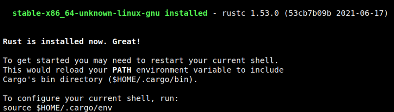

3.1.1 Installing Rust
The following operations have to be run on your Kali Machine.
1. Install “Rust programming language”.
https://doc.rust-lang.org/book/ch01-01-installation.html
2. You'll probably have “rustc” on your Kali Machine. You have to uninstall it before installing “Rust”. Use the following command:
$sudo apt purge rustc
4. Open a terminal on your Kali Machine and enter the following command.
$curl --proto '=https' --tlsv1.2 https://sh.rustup.rs -sSf | sh
Output:

5. Install “cmake”.
$sudo apt install cmake